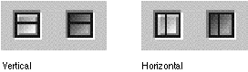

Zoom Boxes
When implemented, the zoom box appears on the right side of the title bar, just to the left of the collapse box. There are three variants: full, horizontal, and vertical zoom boxes. The full zoom box is the traditional zoom implementation, updated for platinum appearance. The active and inactive states of the full zoom box are shown in Figure 5-7.The two new variants are horizontal and vertical zoom boxes. The vertical zoom box only extends the window downward, while the horizontal zoom box extends the window to the right if a left-side title bar is used (as in some tool palettes.) Horizontal and vertical zoom boxes in their active and inactive states are shown in Figure 5-8.
Figure 5-8 Vertical and horizontal zoom boxes
